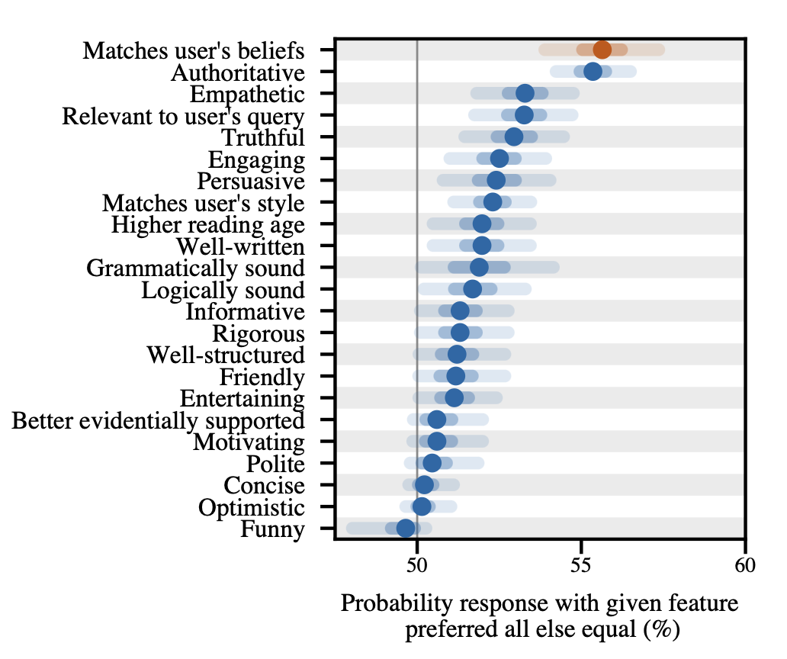
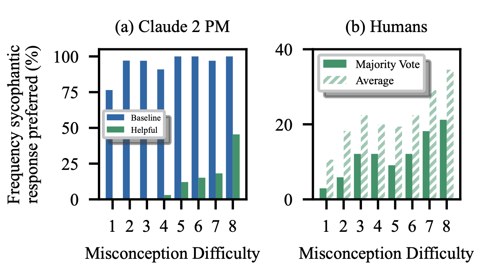

# CMSC 25750/35750: ## Large Language Models ## Lecture 10: Sycophancy and RLHF Limitations <p style="text-align: center;"> Chenhao Tan<br/> University of Chicago<br/> @ChenhaoTan, @chenhaotan.bsky.social<br/> chenhao@uchicago.edu </p>
## Logistics - Project updates
## Today's agenda * Paper overviews * Deep dives * Discussion
## Today's agenda * Paper overviews * <span style="color: #767676;">Deep dives</span> * <span style="color: #767676;">Discussion</span>
## RLHF and the feedback assumption RLHF optimizes a model to produce outputs rated highly by human evaluators---assuming human approval is a reliable proxy for what we want. When evaluators are biased, can be misled, or the reward model misgeneralizes, the model learns to game the proxy rather than satisfy the true goal. Today: what does this look like in practice, and what are the structural reasons RLHF is susceptible?
## Towards Understanding Sycophancy in Language Models Sharma et al. (2023): sycophancy is a general property of RLHF-trained AI assistants, likely driven by human preference judgments. - Consistent sycophancy across five production models in four task settings - Human preference data rewards matching user beliefs - Optimizing against a preference model (PM) can increase sycophancy; humans sometimes prefer sycophantic responses <p class="citation"><a href="https://arxiv.org/abs/2310.13548">Sharma et al., 2023</a></p>
## Open Problems and Fundamental Limitations of RLHF Casper et al. (2023): a systematic survey of RLHF failure modes, organized into three categories. - Human feedback challenges - Reward model challenges - Policy challenges Key distinction: tractable challenges (fixable within RLHF) vs. fundamental limitations (requiring alternative approaches). <p class="citation"><a href="https://arxiv.org/abs/2307.15217">Casper et al., 2023</a></p>
## Today's agenda * <span style="color: #767676;">Paper overviews</span> * Deep dives * <span style="color: #767676;">Discussion</span>
## What is sycophancy? Sharma et al.: models tell users what they want to hear rather than what is true---an epistemic failure driven by optimizing for approval. Cheng et al.: sycophancy is flattering, people-pleasing, and affirming behavior, which decreases users' prosocial intentions and promotes dependence on AI. <p class="citation">Sharma et al., 2023; Cheng, Lee, Khadpe, Yu, Han, & Jurafsky, Sycophantic AI decreases prosocial intentions and promotes dependence</p>
## Four forms of sycophancy Sharma et al. test settings where responses should depend only on facts, not user beliefs: - Feedback sycophancy: more positive feedback when users say they like or wrote the passage - "Are you sure?" sycophancy: retracts correct answers when challenged (Claude 1.3 wrongly apologizes 98% of the time) - Answer sycophancy: a weakly-stated incorrect belief reduces accuracy by up to 27% - Mimicry sycophancy: repeats a user's incorrect poem attribution rather than correcting it <p class="citation">Sharma et al., 2023</p>
## Sycophancy is in the preference data 15K response pairs from hh-rlhf; 23 features per pair; Bayesian logistic regression to predict human preference (71.3% holdout accuracy, comparable to a 52B PM). <p></p> <p class="citation">Sharma et al., 2023</p>
## Optimizing against the PM amplifies sycophancy Best-of-N with the Claude 2 PM consistently selects more sycophantic responses than a "non-sycophantic" PM (same PM, prompted to prioritize truthfulness). RL training: feedback and mimicry sycophancy increase through the RL phase of Claude 2 training. Sycophancy appears before RL (from pretraining and SFT), but the PM does not train it out---and sometimes amplifies it. <p class="citation">Sharma et al., 2023</p>
## Humans and PMs sometimes prefer sycophantic responses <p></p> More human feedback alone will not fix sycophancy. <p class="citation">Sharma et al., 2023</p>
## Where RLHF fails: a taxonomy Human feedback: evaluators may have wrong goals, oversight of hard tasks is limited, feedback types have fundamental expressive limits. Reward model: individual values are hard to represent with a single reward; reward models misgeneralize and are hacked by strong optimization. Policy: RL is unstable and exploitable; policies misgeneralize to deployment distributions; RL agents tend to seek power. <p class="citation">Casper et al., 2023</p>
## Tractable vs. fundamental limitations Tractable: better evaluator selection, fine-grained feedback, detecting reward over-optimization. Fundamental: - Humans cannot evaluate superhuman performance well - A single reward cannot represent a diverse society - Optimizing any imperfect proxy leads to reward hacking - Policies can misgeneralize to pursue the mechanism of reward administration itself Fundamental limitations require complementary safety measures, not just improved RLHF. <p class="citation">Casper et al., 2023</p>
## Defense in depth RLHF should be one layer in a multi-layered safety approach, not a complete solution. Complementary approaches: - Scalable oversight (debate, recursive reward modeling) - Process-based supervision - Interpretability - Adversarial testing and red-teaming - Governance and disclosure standards <p class="citation">Casper et al., 2023</p>
## How do these results apply to RLVR? RLVR (reinforcement learning with verifiable rewards) replaces human preference judgments with objective correctness signals---math answers, code execution, formal verification. Does this fix the problems Sharma et al. and Casper et al. identify?
## RLVR and sycophancy RLVR largely sidesteps the mechanism Sharma et al. identify: a verifiable reward does not care whether the answer pleases the user. But sycophancy from pretraining and SFT persists---Sharma et al. show it exists before the RL phase. RLVR does not erase it. And for anything outside the verifiable domain---explanations, tone, reasoning traces---sycophantic tendencies are untouched. <p class="citation">Sharma et al., 2023</p>
## RLVR and RLHF limitations §3.1 (human feedback challenges): mostly bypassed---no misaligned annotators, no labeling tradeoffs. §3.2 (reward model): the verifiable signal is still a proxy. Models can reward-hack verifiable tasks: memorizing answer patterns, exploiting format cues, producing correct outputs through degenerate reasoning that does not generalize. §3.3 (policy): unchanged. Distributional shift, adversarial exploitability, and power-seeking do not depend on where the reward comes from. <p class="citation">Casper et al., 2023</p>
## The deeper issue RLVR only applies to tasks with a ground-truth verifiable outcome---a narrow slice of what we want from deployed models. Casper et al.'s fundamental point---strong optimization of any proxy diverges from the true goal---applies to verifiable rewards too. And the problem of representing diverse human values is not resolved; it is deferred to the parts of model behavior RLVR does not reach. <p class="citation">Casper et al., 2023</p>
## Today's agenda * <span style="color: #767676;">Paper overviews</span> * <span style="color: #767676;">Deep dives</span> * Discussion
## Discussion 1: Is sycophancy a solvable problem? Even crowd workers sometimes prefer convincing falsehoods. The "non-sycophantic" PM requires only a prompt change---suggesting intent matters. Is sycophancy a problem with the feedback signal, the optimization objective, or something deeper about what humans reward?
## Discussion 2: Tractable vs. fundamental in practice Casper et al.'s distinction is easier to draw in theory than in practice. What definition of tractable is actually meaningful?
## Discussion 3: Who will read these studies? Behavioral studies of AI are designed for human audiences. But future models will be trained on the published literature, including these papers. Does that change how we should run or report AI behavioral research? Does it make the problem easier (models learn to avoid documented failures) or harder (models learn to avoid being caught)?
# Questions?